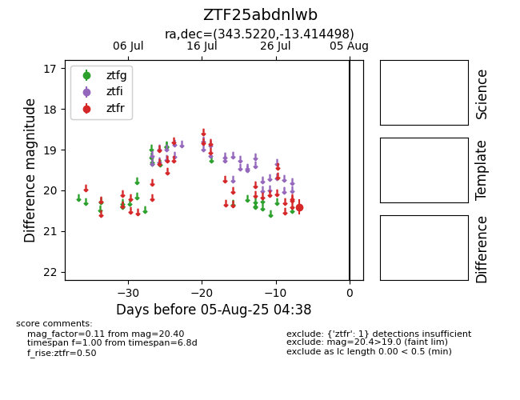

Target ZTF25abdnlwb at 2025-08-05 04:38, see:
FINK: fink-portal.org/ZTF25abdnlwb
Lasair: lasair-ztf.lsst.ac.uk/objects/ZTF25abdnlwb
ALeRCE: alerce.online/object/ZTF25abdnlwb
alt names
ZTF25abdnlwb (ztf,fink)
coordinates:
equatorial (ra, dec) = (343.5220,-13.41450)
galactic (l, b) = (53.6424,-59.36878)
photometry
last ztfr=20.40
1 ztfr detections
